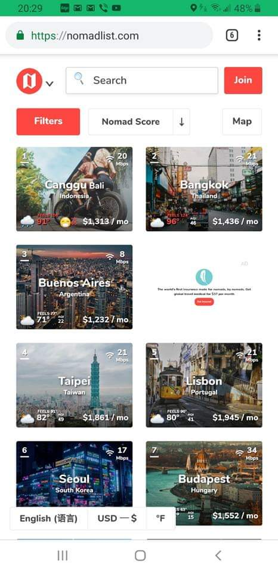

This post is a continuation of Usability testing done on the website, Nomadlist.com, except this time it was tested on mobile phones. As before, Nomad List self describes itself as a database of 2300 plus cities in the world with thousands of data points analyzed to help travelers and more specifically digital nomads to analyze places the best fit their needs.
The ideal user base for this site are tech savvy travelers familiar with analyzing data sets.
 Nomad List Mobile HomepageThe Testers
Tester 1: - 34 year old Male, Software Engineer
- Avg hours spent online daily: 8 hrs
- Sites browsed: News pages, technical documentation blogs, Wikipedia, forum sites
- Favorite sites: Stack overflow, Wikipedia
Tester 2: - 30 year old Female, Insurance Account Specialist
- Avg hours spent online daily: 12 hrs
- Sites browsed: Social Media, travel sites, flight ticket sites, google images, Wikipedia, siccode.com
- Favorite sites: Facebook
Tester 3: - 57 year old Male, Self Employed Entrepreneur
- Avg hours spent online daily: 2-3 1/2 hrs
- Sites browsed: Research sites, legal research, international trade/politics pages
- Favorite sites: YouTube, Google Scholar search
Note: Testers 1-3 had previously reviewed the desktop application before reviewing the mobile application.
The Script
The script remained mostly the same. Since the functionality of the site is nearly identical to it's functionality on a desktop, there was no need to change up the questions being asked.
Each Tester was introduced to the usability test process and asked to detail their thoughts as the perused the site and completed the requested tasks.
Upon opening the link to the homepage, the testers were asked to review the homepage and give a brief description of what their thoughts were on what the purpose of the website was and what service it was providing.
Question 1: Look at this page and tell me what you make of it: what strikes you about it, whose site you think it is, what you can do here, and what it’s for. Just look around and do a little narrative.
Then they were advised that I would be asking them to perform a set of 3 tasks. The 3 tasks requested of the testers are as follows:
Task 1: Please find the least expensive travel destination with the highest ranking
Task 2: Can you locate the map feature and do your best to explain the scale and scoring the website uses to score featured places on the map; Are you able to find a safe and warm destination using the map feature
Task 3: Can you figure out what it costs to join and would you feel comfortable purchasing one of the packages.
At the end they were asked to summarize their thoughts and experience on the page. To provide any additional thoughts on what they thought might be missing or confusing and what they liked.
User Test Reviews
Tester 1 (Review completed on iPhone X):
Tester 1 stated he had a clear understanding on of what service the website was providing. He had no trouble filtering and sorting to determine Bangkok as the highest ranked least expensive destination. He was able to bring up the map and navigate the site fairly quickly but had a tough time understanding the scoring scale and range on the map. He found the Join page easy to find and navigate to, but upon reviewing the packages, he felt the product/service provided was overpriced. Tester 1 took about 10 minutes to complete tasks.
Tester 2 (Review completed on iPhone 8):
Tester 2 also stated she had a clear understanding of the page and that it loaded quickly and she had no trouble scrolling through the page quickly and accessing all the links, initially. On task 1 she found the List sort feature confusing, since the pop up stated it was sorting from Highest to Lowest but the data and graphics appearing on her screen seemed to be in opposite order. She felt the "Cost of Living" and the ranking were contradicting but was happy that the mobile site provided and explanation of the value listed in the bottom left of each destination image as the "cost of living", which was not something she had see previously. She had no problem bringing up the map but also was a little confused by the scale.
As she was on the Map feature, for Task 3 she did have some difficulty navigating back to the homepage to find the "Join" button. She managed to get there by clicking the "Grid" button and then found "Join". She noted that the structure of the page was similar to the desktop and that it was interesting that there were no visible terms of agreement listed or linked on this page. She stated that she'd have to do more research with the sites features to see how it might help her before she would consider joining. She did state that she did see the value the plan provided and she would choose the 1 payment package if she decided to invest in it. Tester 2 took about 20 minutes to review the mobile site.
Tester 3 (Review completed on Samsung Galaxy 9 Plus):
Tester 3 had even more trouble navigating and reviewing the mobile site than the desktop site. He had trouble figuring out how to complete Task 1 and use the filter or sort options on the mobile home page to find the highest ranked least expensive destination. He was able to navigate to the map for Task 2 but had trouble understanding the rating scale and advised that he couldn't make sense of the colors associated with the scale. From the map feature he was able to filter for the warmest, safest, highest ranked destinations but having trouble understanding the sorting and scale made pinpointing a destination that fit the request difficult. He also experienced difficulty navigating back to the home page to find the "Join" button, and review the packages. In general, he stated that he found the mobile site even more confusing and difficult to navigate than the desktop site.
Summary
In general, the Test Users found the mobile site to be very similar to the desktop site, in look and functionality. Tester 1 and 2, navigated it with similar ease to the desktop application though there were clear areas as with the desk site that were navigational issues. Tester 3 found the mobile site even more difficult to use, and was very frustrated and confused at the end of the testing. All testers, described some confusion over some of that data icons being represented.
Suggested improvements based on user testing of Nomad List mobile site:
- Add the same tagline to the homepage view that comes up on the desktop application to help with questions concerning the sites purpose.
- Add an info pop up "on press" for the scale listed on the map feature that explains the scale and range.
- Add a home for easy access to the home screen and refresh of the page.